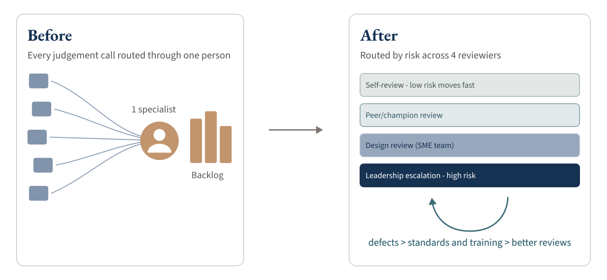
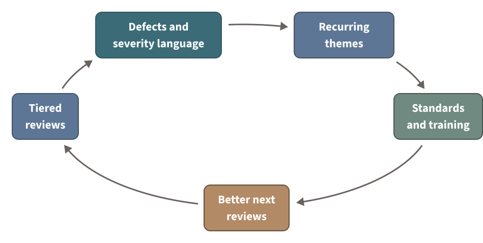

Walmart Experience Quality Strategy • 2024-2026
From One Reviewer to a Quality Decision System
I design operating models that help product organizations make better quality decisions at scale. Here, I transformed an accessibility-review bottleneck into a repeatable system for routing risk across three teams and sixteen designers.
What Ran through the Model
- 4
- Review tiers
- 44
- Defects remediated · point-in-time
- 6 grew to 8
- Training sessions from real defects
- 2
- Accessibility champions
From a Single Queue to a Routing System

One Specialist Can’t Be the Whole Quality System
As accessibility adoption grew across my product group, which included three product teams and sixteen designers, the biggest risk was no longer a missed defect. It was organizational: every review, question, and judgment call routed through one specialist. That model hides quality risk until late in delivery, slows teams down, and keeps hard-won knowledge locked in one person’s head.
The visible problem looked like a review backlog. The deeper problem was that the organization had no shared way to decide which issues were urgent, which were pattern problems, and which needed a leadership tradeoff. Quality could not stay steady while it depended on me. That’s a governance problem, not a throughput problem.
I Reframed “Review More Work” into “Design How Quality Decisions Move”
Instead of trying to review my way out of a backlog, I designed the decision system that quality work should move through: who looks at what, how much scrutiny each piece earns, how severity gets named, and how a recurring issue becomes a permanent fix. The goal was to match review depth to risk. Low-risk work could move quickly, while expert and leadership attention stayed focused on ambiguity, cross-system impact, and real tradeoffs.
That reframe is the whole shift: from a specialist doing more reviews to an operating model that could route risk without me sitting in the middle of every call.
The Loop Was the Product
The value wasn’t any single artifact. It was how the pieces reinforced each other. Reviews surfaced defects. Defects got a shared severity language. Recurring themes drove documentation, patterns, and training. Training improved the next round of reviews. A tiered path decided how far each issue traveled, while standards lived in Figma and Confluence, where designers already looked for guidance.

The two mechanisms inside the loop: tiered review and shared severity
A four-level review path matched depth to risk. Self-review ran anytime and used AI assistance. Peer review happened within each team, where an embedded accessibility champion took the first pass and routed harder calls to me as the SME. Work then reached design review, where design and accessibility experts used a shared rubric covering design heuristics, UX laws, accessibility, and copy standards. Significant risk or tradeoffs moved to leadership escalation. Building and training those champions is its own effort; see the Accessibility Champions Program.
A shared severity language made triage less personal. A defect-severity model with P1/P2 prioritization standards let teams classify and route issues consistently, instead of negotiating urgency by personal judgment. At a point-in-time snapshot, 34 of the 44 tracked defects were documented through this consistent structure.
An explicit AI line. AI could draft findings and Jira-ready structure; humans validated priority, owner, and final acceptance. Exercised on real defects, never a scaled production workflow.
The Proof Was the Loop Closing on itself
The clearest evidence the system worked was not a review count. It was the loop feeding forward. The system’s own defect data showed which issues recurred most, and I built training directly from them: a focused series of six sessions in 2024, structured around the five most common accessibility defects, expanded to eight sessions in 2025 as the patterns evolved. This is how recurring defects became prevention rather than another round of one-off cleanup.
In one review, the shared language stopped a team from building a new pattern for a local problem and redirected them to an existing component. It prevented design-system debt before it shipped.
What I Designed and Led
I led the system end to end, from the review path and severity model to standards, training, and measurement:
- the four-level review path and its escalation criteria
- the defect-severity model and the P1/P2 prioritization standards used in triage
- the standards hub in Figma and Confluence, including annotation expectations, review guidance, and pattern documentation
- a reusable standards corpus of taxonomy, checklists, remediation guidance, templates, and verification protocol that externalized the judgment behind the reviews
- the AI-intake governance rule: AI drafts, humans validate priority, ownership, and acceptance
- the KPI framework’s categories, built to measure earlier detection, prevention, and ownership rather than raw bug counts
- the annotation and QA reviews counted in the operating snapshot
What Changed, and What I’d Measure Next
The strongest outcome was a durable capability, not a cost or defect-reduction figure. The group gained a repeatable way to route design-quality risk, name severity in a shared language, and turn recurring issues into standards and training without depending on one specialist to hold quality together.
Measured, point-in-time: 27 design handoffs, 25 annotation reviews, and 3 formal QA reviews ran through the model. Forty-four audited defects were tracked and remediated, and 34 were documented through the shared severity structure. The defect data generated a training series that grew from six sessions to eight. Uptake: the severity structure was applied to most tracked defects, and the loop produced curriculum that was delivered and expanded. The system was used, not just built.
An honest boundary: Distribution started where I could verify it. On the 16-designer team, two accessibility champions took the first pass on reviews and eventually owned the accessibility-annotation review I used to run. I retained SME judgment and escalation because I had not yet built a way to trace review quality and correct drift across the whole model. Releasing that responsibility would have introduced invisible risk.
What I’d operationalize next: I designed the measurement model around the questions that matter: Were defects caught earlier? Did severity decisions stay consistent across reviewers? Which recurring issues fell after documentation or training? Did high-risk issues reach leadership before tradeoffs got expensive? It never reached a live reporting cycle before I rolled off. That’s the first thing I’d stand up next.
The next scale of this model: When a reorganization expanded my scope from three teams and sixteen designers to five teams and 70+ designers across roughly 80 touchpoints, I applied these mechanisms at the portfolio level: risk-based decisions, shared standards and training, and distributed first-pass expertise through champions. That work became the Associate Experience Portfolio Strategy. The strategy was still in progress when business circumstances changed, so its case study presents the decision infrastructure and early evidence rather than a long-term measurement cycle.